Máquinas, materiais e equipamentos fotovoltáicos.
Painel fotovoltaico.
Os módulos fotovoltaicos são produzidos à partir de materiais como Silício, Grafeno, Telureto de Cádmio, Seleneto de cobre e orgânico. Sendo o Silício o mais viável economicamente para produção em larga escala.
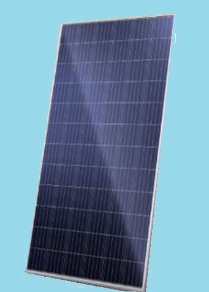
Um painel solar – PV- (Grupo de módulos) é uma placa que capta energia solar, ou seja, é utilizada para converter a luz do sol em energia elétrica, sendo composta por módulos (Grupo de células) e células solares fotovoltaicas. Além disso, ela é responsável por absorver energia solar e pode gerar eletricidade em corrente contínua - DC.
Considerada uma ótima alternativa para a geração de energia limpa, a placa que capta energia solar funciona da seguinte maneira: são coletados fótons da luz solar e, logo, são convertidos em corrente elétrica. Desta forma, a energia captada por meio das placas solares pode ser utilizada de diversas formas, seja em residências, comércios, indústrias e até mesmo na iluminação externa de espaços públicos. Quando submetido à irradiância de 100W/m² á 25ºC, a eficiência do módulo é máxima. Nas melhores condições a irradiância natural chega a 800W/m².
É válido destacar que as placas solares possuem mínima manutenção, o que contribui para a sua lista de benefícios no momento de escolha do seu projeto. Portanto, elas podem durar anos e não prejudicam o meio ambiente.
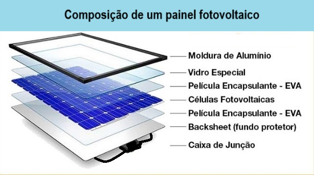
Tipos de painéis fotovoltaicos.
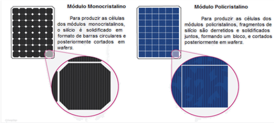
PAINEL MONOCRISTALINO
Composto por um único cristal de silício ultrapuro, com lâminas em formas individuais arredondadas, tratadas e transformadas em células fotovoltaicas, o painel monocristalino é o painel mais antigo. Dada a pureza do silício, e as complexas técnicas de produção, este painel torna-se, por norma, mais caro do que as restantes opções que vamos analisar, mas também mais eficaz. Este é também o painel que ocupa menos espaço, W/M², não comprometendo a quantidade de energia que gera face a outros painéis fotovoltaicos. São considerados os melhores do mercado e a sua vida útil estende-se por mais de 30 anos.
PAINEL POLICRISTALINO
Este é também um painel obtido a partir do silício, mas neste caso as suas células são formadas por diversos cristais que são fundidos em blocos. Os seus fragmentos podem ser as células recicladas e aproveitadas da produção solar monocristalino.
O painel policristalino, como tem a pureza do silício nas células menor e a área de colocação tende a ser maior, utilizando assim mais placas solares, pode tornar-se menos eficiente quando comparado com o monocristalino. No entanto, esta menor eficiência referida não é linear. A diferença de tecnologias (policristalina e monocristalina) tem um grande impacto quando existe limitações de espaço. Ou seja, pode até encontrar painéis fotovoltaicos de tecnologia policristalina que produzem mais energia que um painel monocristalino. Depende do aproveitamento total da área do módulo com as células.
Este painel solar fotovoltaico tem ainda o mesmo desempenho e tempo útil de vida que o anterior. Contudo, o seu custo de produção é mais barato e a quantidade de silício residual utilizado no processo de fabricação é menor do que os outros sistemas fotovoltaicos.
A tecnologia tem permitido aumentar as potências de pico dos monocristalinos com velocidade. Como os policristalinos não tem acompanhado, seu uso comercial é cada vez menor.
PAINEL DE FILME FINO
Este é um outro tipo de painel existente na categoria de painéis solares. Neste caso, o material é colocado diretamente sobre a superfície desejada. Os painéis solares de filme fino possuem uma ou mais camadas de material fotovoltaico e podem ser feitos a partir de diversos materiais (silício amorfo, cobre-índio, telureto de cádmio, gálio seleneto). Como estes são painéis muito maiores do que os de silício cristalino, vai precisar igualmente de muitos mais painéis (e espaço) para gerar a mesma quantidade de energia que os restantes, revelando-se muito menos eficiente que um painel monocristalino ou policristalino. São usados para pequenas potências.
PLACAS MONOFACIAIS E BIFACIAIS
Os painéis monafaciais diferem dos bifaciais, pois o segundo é capaz de gerar eletricidade quando recebe irradiação, direta ou difusa poe ambos os lados. Em telhados usamos os painéis monofaciais, já em usinas, os painéis bifaciais podem apresentar um melhor aprofeitamento da irradiação difusa e/ou refletida.
PAINÉIS FULL CELL E HALF CELL.
Os painéis ainda podem ser classificados como Full Cell ou Half Cell. Este último tem as células dobradas ou cortadas ao meio. Isso diminui a corrente pela metade, diminuindo o efeito da resistência, e logo, aumentando a eficiência. Além de diminuir os problemas com sombreamento. Contudo, o custo deve ser avaliado, pois uma Half Cell é bem mais cara.
HSP - HORAS DE SOL PLENO
Uma Característica natural á que devemos atentar, ao buscarmos a melhor eficiência de um arranjo é o HSP, Horas de sol pleno. Que varia com a época do ano e com a posição relativa na superfície terrestre. Esta grandeza de controle equivale ao nº de horas que uma irradiância constante de 1000W/m² (condições de teste – STC) necessita para gerar a mesma quantidade de energia que a irradiância média ao longo do dia. Considerando que as especificações dos módulos serão dadas para 1000W/m², saber o HSP de uma região é vital para o cálculo.
Nos cálculos consideram-se ainda perdas por direção do telhado (BRASIL), NO, NE de 3% a 8%, E, W entre 12% e 20%. Para o sul as perdas são muito grandes. Outra perda ocorre por angulação: Pa = cos (ângulo do módulo – latitude).
Outras perdas podem ocorrer por sujeira, sombreamento, temperatura, resistência dos cabos, perdas no inversor...
CAIXA DE JUNÇÃO DOS MÓDULOS FOTOVOLTÁICOS E DIODOS BAYPASS
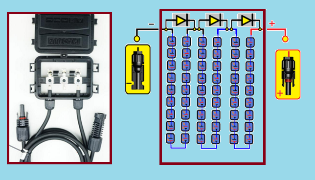
Os diodos de by-pass (ou derivação), tem a função de evitar a formação de hotspots (pontos quentes). Quando ocorre um sombreamento o painel para de produzir. Os diodos de by-pass permitem a separação de séries de módulos que compêm um painel, onde, se sombreado, apenas parte do painel para de produzir, enquanto as séries de módulos no arranjo náo sombreado, continua a produzir.
Conectores MC4
Os Conectores tipo MC4 foram especialmente desenvolvidos para sistemas fotovoltaicos.

Uma das principais vantagens é a facilidade de instalação dos painéis em série e paralelo com os conectores tipo MC4. Os painéis vêm com os cabos prontos, basta conectar um cabo ao outro. Também pode ser necessária a utilização dos conectores MC4 "multi-branch", que possuem normalmente duas entradas e uma saída, ideais para conexões em série e paralelo.
Entre as ferramentas utilizadas para montagem dos cabos são conhecidas pelos instaladores estão o Alicates de crimpagem.
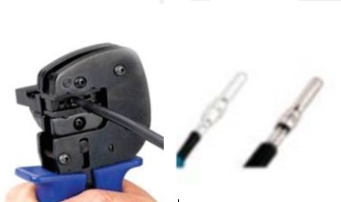
USO DO MC4
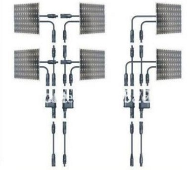
Inversores
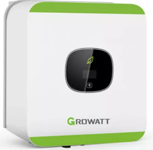
A corrente elétrica é gerada no módulo é corrente contínua e para que ela seja aplicada em uma residência, empresa ou indústria, ela precisa ser transformada em corrente alternada, ou seja, os elétrons devem ser capazes de alternar a direção que estão seguindo. O responsável por fazer este processo é o inversor. Com o processo de transformação feito pelo inversor, a energia solar pode efetivamente ser utilizada para alimentar qualquer equipamento. Um inversor é composto basicamente por três partes, e a primeira delas é o oscilador, responsável por transformar uma corrente que tinha uma tensão contínua em uma com pulsos de tensão.
Micro Inversor
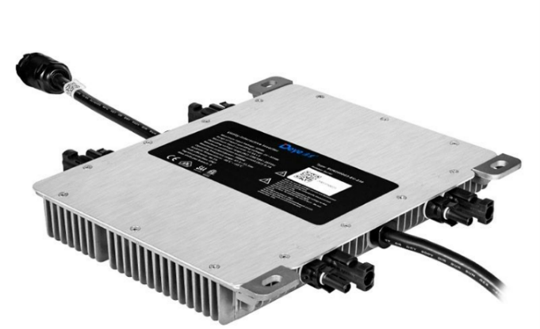
O Microinversor é a solução ideal para trazer mais eficiência e flexibilidade ao seu sistema de energia solar fotovoltaica, Com tecnologia MLPE - Module-Level Power Eletronics, que potencializa a energia de cada modulo independentemente e Wi-Fi Integrado. Ele pode se conectar a até 4 placas solares, com ligações individuais, e conta com garantia de 12 anos (já incluindo os 90 dias da garantia legal) contra defeito de fabricação e uma vida útil maior que 25 anos.
Inversor Hibrido
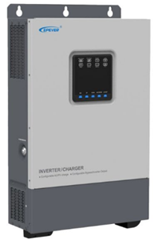
O Inversor Off Grid Híbrido é um inversor multifuncional 3 em 1 que opera com ou sem bateria. Com tripla função (Inversor + Controlador de Carga MPPT + Carregador CA).
Bateriais
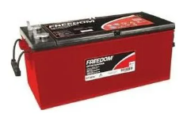
As baterias estacionárias possuem grades de liga de chumbo-cálcio laminado expandida. Placas espessas de alta densidade com separadores de polietileno em forma de envelope com alta resistência mecânica. Caixa e tampa de polipropileno de alta resistência a impactos com tampas seladas por fusão do material, sem possibilidade de apresentar vazamentos. Possuem sistema de respiro com filtro antichama e indicador de teste que permite imediata visualização das condições da bateria para teste orientando seu diagnóstico. Sua autonomia média é de 4 anos e a mais popular é a de 150Ah. É mais barata que as de lítio-fósforo, mais seu tempo de vida útil é muito menor.
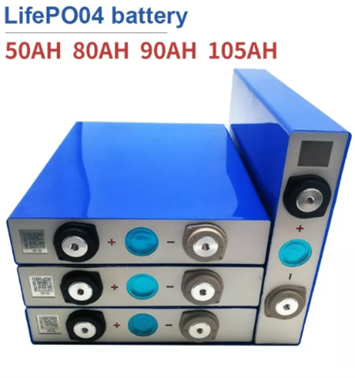
As baterias LIFEPO4 têm uma alta capacidade com excelente desempenho, longa vida útil e alto fator de segurança.
Além disso, podemos personalizar baterias de armazenamento de energia com diferentes capacidades de acordo com suas necessidades 3kwh ,5kwh,10kwh, 20kwh.... Este módulo de bateria integrado com BMS inteligente dentro, tem grandes vantagens em segurança, vida útil, densidade energética, faixa de temperatura e proteção ambiental. BMS é a tecnologia de balanceamento das baterias de lítio, seu uso ou integração evita corrente reversa, sobre aquecimento e danos a bateria.
Controladores
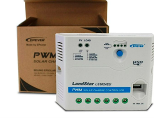
O controlador de carga PWM assegura o monitoramento da capacidade de carga. Além disso, o controlador de carga e descarga conta com uma saída USB de 5V/2A para carregamento de dispositivos como celular e tablets sem a necessidade de ligá-los no inversor. É ideal para sistemas fotovoltaicos Off-grid com bateria. Os controladores de carga PWM sem display são pequenos e adequados para instalações mais simples. Possuem indicador LED para o status de bateria e alguns modelos ainda apresentam porta de entrada USB. Conseguem detectar automaticamente a tensão de operação do sistema e gerenciam a carga e descarga de energia da bateria. Dentre as aplicações mais utilizadas, podemos destacar usos em sistemas de monitoramento urbano e rural, rodovias, segurança, iluminação e eletrificação rural. Com eficiência menor, baseada na modulação por largura de banda, limitando a corrente, não é opção frente ao MPPT.
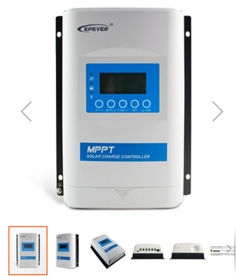
O controlador de carga MPPT – Seguidor de máxima potência - é o mais versátil e moderno controlador solar, sendo ideal para sistemas grandes ou que utilizem painéis de grande porte. Sua avançada tecnologia conta com a função de compensação da temperatura, que garante o carregamento correto da bateria, otimizando o desempenho e prolongando sua vida útil, e o seu sistema é compatível com interface RS485 para comunicação de dados, configuração por software PC ou medidor remoto, permitindo acompanhar em tempo real, ajustar os parâmetros do sistema e programar função de ligar/desligar do sistema. Além disso, consegue transferir o máximo de energia das placas, mesmo reduzindo a tensão dos painéis até o mesmo nível da tensão da bateria estacionária (12/24/36/48Vcc com detecção automática) para carregar o banco de baterias.
Balanceadores
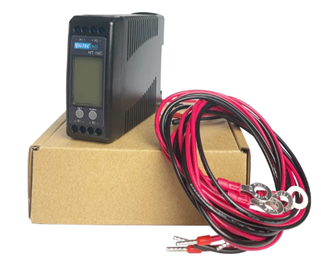
Sejam baterias estacionárias, lipo ou lifepo4 o desequilibrio de carga pode diminuir rapidamente a vida útil da bateria.
O EQUALIZADOR BALANCEADOR PARA BANCO DE BATERIAS é utilizado para controlar a tensão de cada bateria durante seu carregamento. Isso porque, na utilização de bancos de baterias com conexão em série, a tensão será diferente durante o processo de carga e descarga e, à medida que o processo de carga e descarga é repetido, essa diferença se acentua em decorrência das diferenças na composição/degradação química de cada bateria. Dessa forma, com o uso do EQUALIZADOR BALANCEADOR PARA BANCO DE BATERIAS, todas as baterias são carregadas com a mesma tensão, o que aumenta a sua vida útil.
Principais características: 1 equalizador para cada 2 baterias; Conexão para 48V (4 baterias de 12V em série); Conexão para 24V (2 baterias de 12V em série); Display de LEDs com indicadores de fluxo de corrente.
É importante, contudo, saber que cada tipo de bateria possui seu próprio tipo de balanceador, logo se um banco estacionário for substituido por um de Litio, o balanceador deverá mudar tambem, e vice-versa. A tecnolocgio para balancear as baterias de ion de lítio é a BMS.
STRING BOX

String significa série. Logo, a string box é o componente de proteção da parte CC do sistema fotovoltaico que irá receber os conectores que ligam os arranjos de painéis. Ficou comum chamar o quadro CA também de Strig Box CA. A String Box CC conecta os cabos vindos dos módulos fotovoltaicos ao inversor, enquanto fornece proteção contra sobretensão e sobrecorrente e permite o seccionamento do circuito. Os elementos básicos de uma string box são:
- Invólucro – onde serão alocados os dispositivos de proteção e as conexões elétricas;
- Dispositivo seccionador – podendo ser implementado com chave seccionadora ou disjuntor;
- Dispositivo de proteção contra sobretensão – DPS;
- Dispositivo de proteção contra sobrecorrente – disjuntor ou fusível;
- Cabos CC.
Sustentação de painéis - KITs
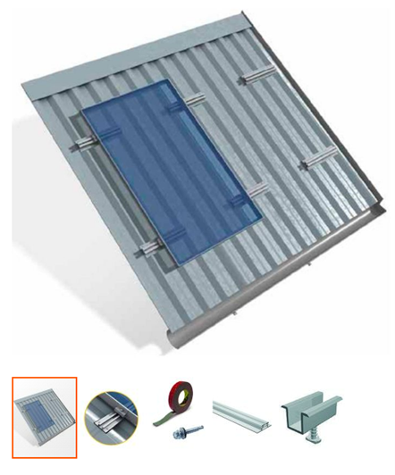
As empresas especializadas em kits de sustentação de painéis fotovlotaicos desenvolveram uma infinidade de soluções. Encontramos kits de sustentação para muitas soluções, mas os mais utilizados são:
- Kit para telhado cerâmico.
- Kit para telhado de fibrocimento (ondulado e calha).
- Kit para telhado com telhas trapezoidais me´talicas.
- Kits para laje.
- Kits para solo.